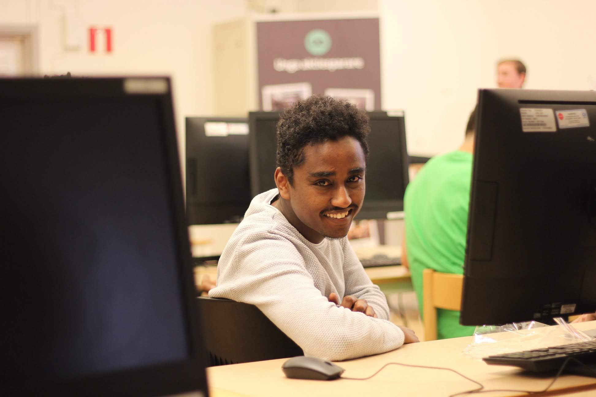

My report page in the course Software development for the web

This is my report-page in the course. This page contains a presentation of myself.
So, a presentation might be in order. I'll begin.
My name is Kubrom Mulugheta my friends call me Kibri. I was born in 1989 in Asmara,Eritrea. Eritrea Is situated in the horn of Africa bordering Ethiopia to the south, Sudan to the West and Djubuty to the East. I am the youngest in my family, I have two brothers and one sister.
At the age of 8 I got my first computer, my dad brought an old PC with windows 95 from his office. I remember vividly I used to play an old version of super Mario.During high school I took a course in technical drawing and worked a lot with AUTOCAD. As such I like designing and editing.I joined Kristinastad university in 2017 before joining I worked in a construction company as surveyor and in an import and export company as a sales person.For more inforation about my work experiences you can check my linkedin account.
As a kid I enjoyed watching movies and documentaries, at home with my big brother we used to watch national geography and world war 2 documentaries. Growing up I become more social and my favourite past time activities was going to pubs.Currently my hobbies are taking long walks into the nature, cooking and travelling.
When it comes to sports I used to like playing chess( if you consider that as a sport lol) and all kinds of board games. Currently I am interested in swimming in genral and diving in particular, I regularly swimm twice a week.My plan is to become a good diver. My dream one day to buy a house by the sea and a boat.
Lets keep in touch in the chatt and through GitHub!